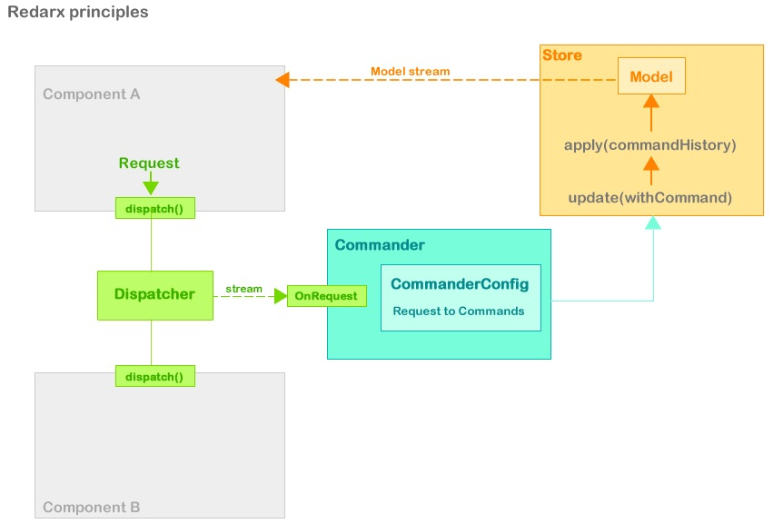

Redarx (POC)
Experimental Dart State Management humbly inspired by Parsley / Redux / ngrx and André Stalz work

Demo
Goals
- study Dart : streams, generics, annotations, asynchrony...
- study Redux, Mobx, state management
- play with reducers, Request/Commands mapping...
- and more studies, more experiments, more play...
Principles
The Application State is managed in a Store
State is updated by commands, and the store keep a list of executed commands.
State is evaluated by a reducers of model commands updates, basic cancellation is allowed by simply remove the last command from "history".
A Commander listen to a stream of Requests dispatched by a Dispatcher injected in the application components | controllers | PM | VM
Each Request is defined by an RequestType enum, and can contains data.
Requests are "converted" to commands by the Commander, based on the CommanderConfig.map definition
- the dispatcher is injected in view || controller || PresentationModel || ViewModel
- Controllers use the dispatcher to dispatch Requests
- Request are categorized by types, types are defined in RequestTypes
- the dispatcher stream dispatched Requests
- the dispatcher is injected in Commander
- the commander listen the Requests stream
- each Request is tied to a command via a CommanderConfig which is injected in Commander
- Commander need a CommanderConfig containing a Map<RequestType,Command>
- when an Request is dispatched, the commander add the corresponding command to the store
- the store then execute
- a (synchronous) command is executed to update the store
- the store is injected in the commander
TODO
- implements a Scan stream transformer » just emit the last reduced state
- fix the generic/command (
mess) - typed Request ? BookRequest, UserRequest ...?
- async commands
- more stream
- external config file ? dynamic runtime RequestType/Command Pair via defered libraries loading ?
- ...
Questionning
- dispatcher : use a streamController.add rather than dispatch method ?
- multiple store ? dispatcher ? commander ?
- each component could set an Request stream and the commander could maybe listen to it
Libraries
- redarx
-
Redarx : action dispatcher commander store